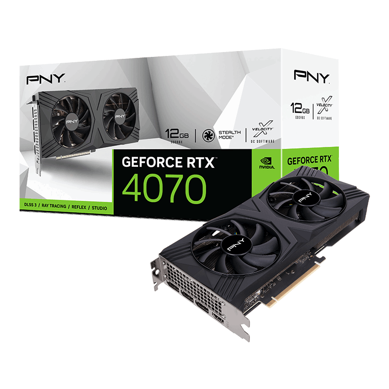
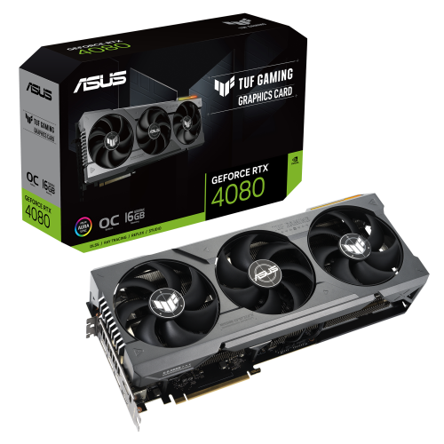
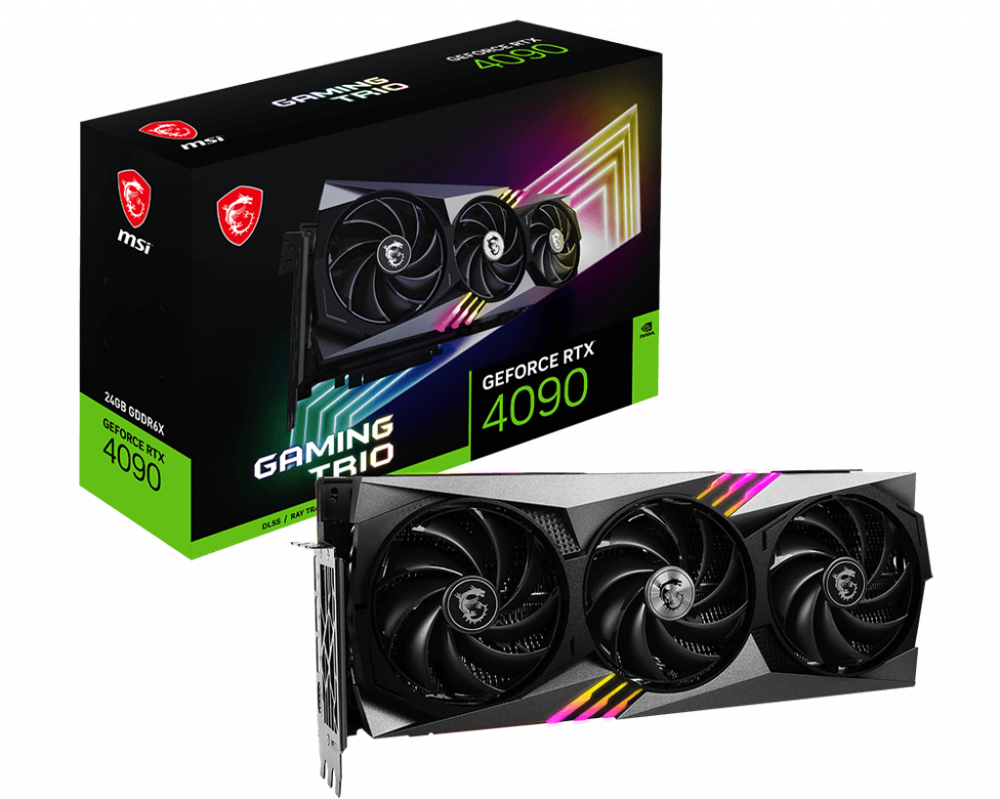

The ASUS 3070 is a high-performance graphics card designed for gaming enthusiasts and professionals. It features advanced cooling solutions and a powerful GPU, making it capable of running even the most demanding games and applications with ease. The card is also built with high-quality materials, ensuring durability and longevity. With its sleek design and advanced features, the ASUS 3070 is a popular choice among gamers and professionals alike.

PNY 3070
The PNY 3070 is a graphics card based on the Nvidia Ampere architecture. It features 5888 CUDA cores, 8GB of GDDR6 memory, and a boost clock of up to 1725 MHz. The card also supports real-time ray tracing and DLSS, which provide improved visuals and performance in games that support these features. The PNY 3070 is a great choice for gamers looking for a high-performance card that can handle the latest games at high settings.
NVIDIA 4070
The Nvidia RTX 4070 is an upcoming graphics card expected to feature the latest Ampere architecture and offer significant performance improvements over its predecessors. While specific details are not yet known, it is speculated to offer more CUDA cores and higher clock speeds, which should translate into better gaming performance and improved ray tracing capabilities. The 4070 is expected to compete with AMD's RDNA 3 lineup and is highly anticipated by PC enthusiasts and gamers alike.
NVIDIA 4080
The Nvidia RTX 4080 is one of the most anticipated graphics cards of the year, expected to bring significant improvements in performance over its predecessor. With its advanced architecture and cutting-edge features, the RTX 4080 promises to deliver high-quality graphics and seamless gaming experiences. Its powerful AI and ray tracing capabilities will make it a top choice for gamers, content creators, and professionals alike. With the launch of the RTX 4080, Nvidia is expected to set a new benchmark for graphics card performance and redefine what is possible in the world of gaming and digital content creation.

TUF 4080
The TUF 4080 is a high-end graphics card produced by Asus for demanding gamers and content creators. It features the latest Ampere architecture from Nvidia, with 10,240 CUDA cores and 12GB of GDDR6 memory, delivering unparalleled performance in 4K and VR gaming. The card also includes advanced cooling technology, ensuring optimal temperature management even during intense workloads. With its sleek design and cutting-edge features, the TUF 4080 is a powerful tool for any PC enthusiast looking to take their gaming or creative work to the next level.

MSI 4090
The MSI RTX 4090 is a high-end graphics card designed for gaming and demanding creative applications. It features 10496 CUDA cores, 328 Tensor Cores, and 82 RT Cores, making it a powerhouse for AI and ray tracing. With 24GB of GDDR6X memory and a boost clock speed of up to 1860 MHz, the MSI RTX 4090 can handle even the most demanding workloads. Its advanced cooling system with triple-fan design and Vapor Chamber technology ensures optimal thermal performance, while the RGB lighting adds a touch of style to your setup. Whether you're a professional content creator or a hardcore gamer, the MSI RTX 4090 is a top-of-the-line choice.
ZOTAC 4090
ZOTAC GeForce RTX 4090 is a high-end graphics card designed for the most demanding gamers and professionals. It features 10752 CUDA cores, 24GB GDDR6X memory, and a boost clock of up to 1770 MHz. With its powerful performance and advanced features, the ZOTAC 4090 can handle even the most complex gaming and content creation tasks with ease.